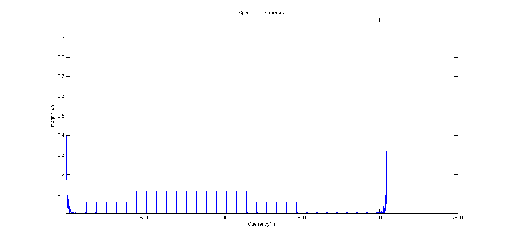
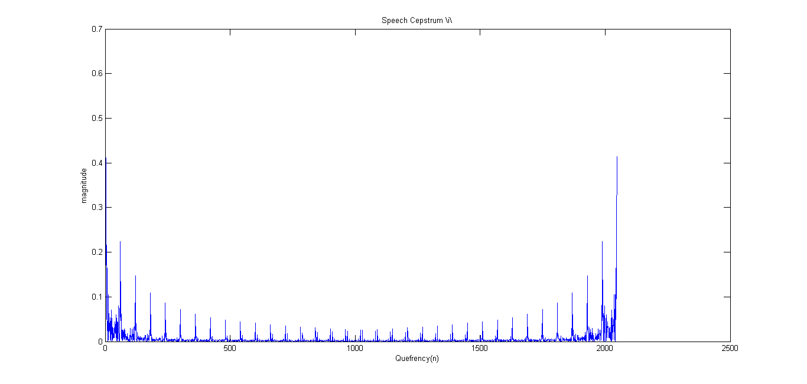
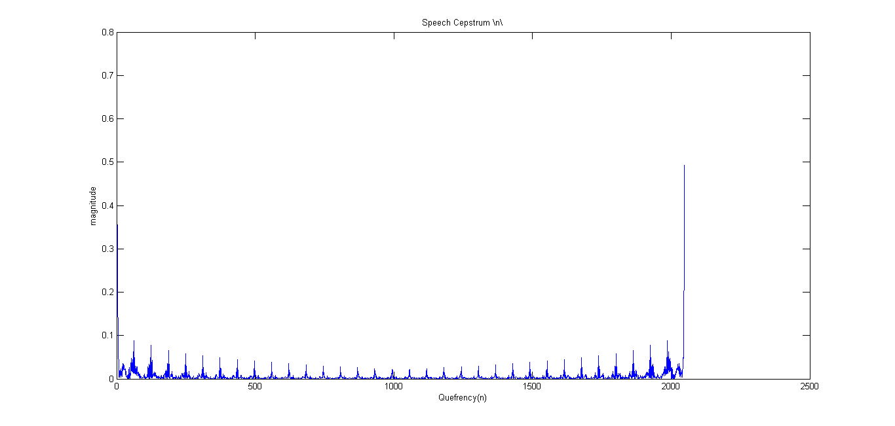
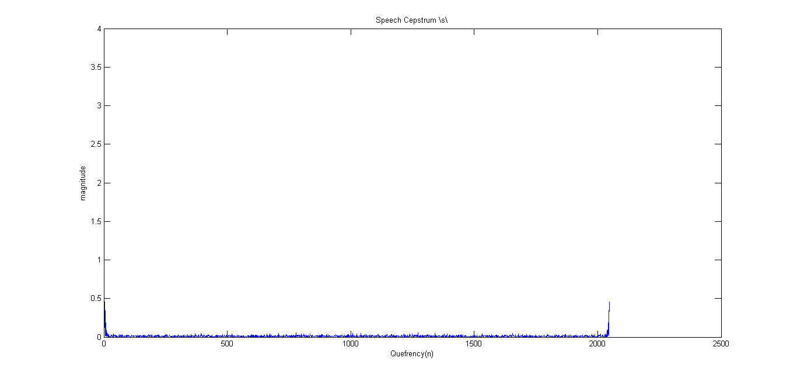
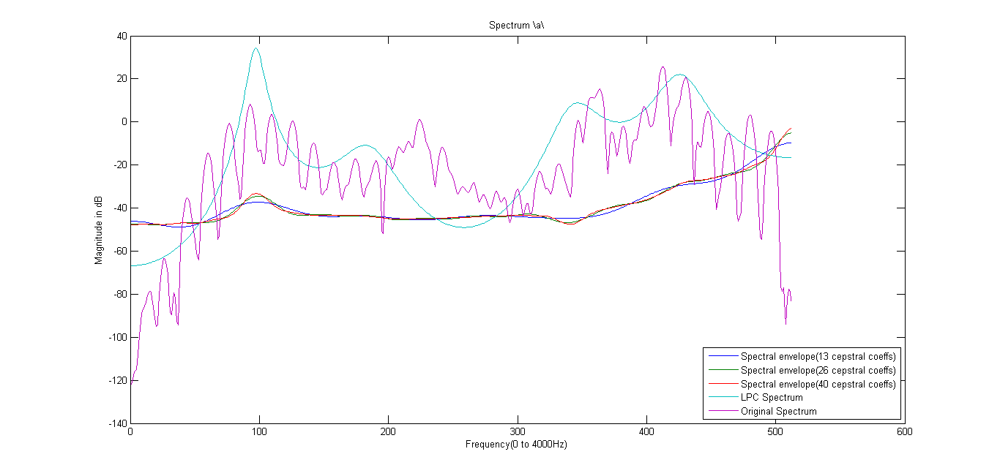
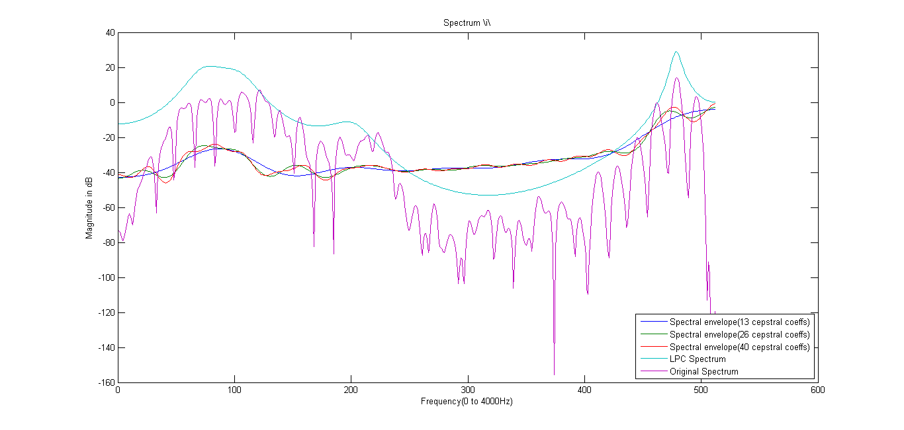
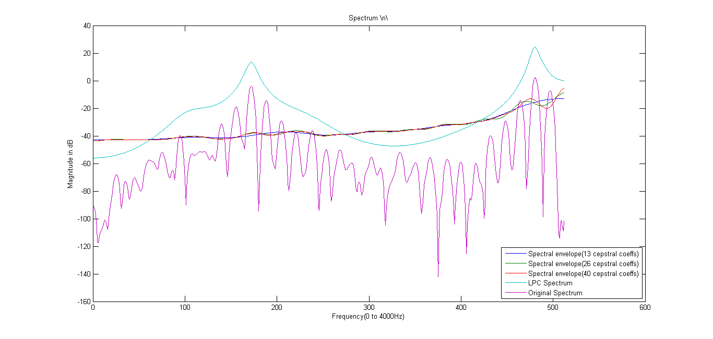
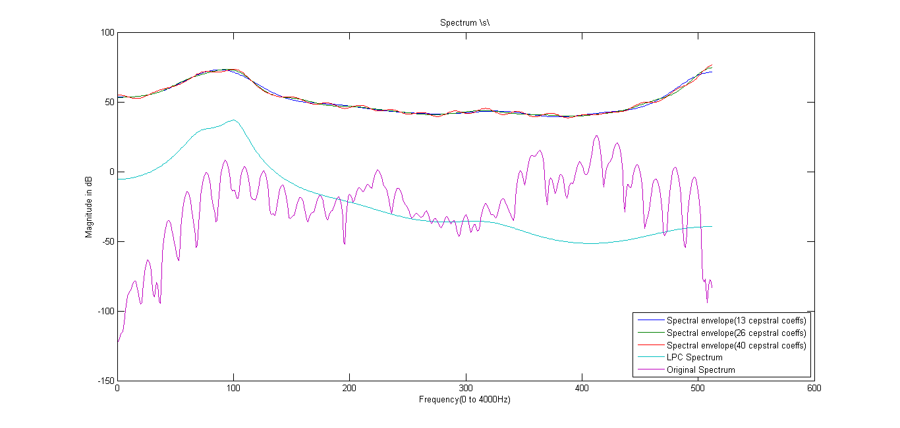

S_a = wavread('a.wav');
S_i = wavread('i.wav');
S_n = wavread('n.wav');
S_s = wavread('s.wav');
Lwin = 240;
w = hamming(Lwin);
pre_em_S_a = zeros(length(S_a),1);
pre_em_S_a(1) = S_a(1);
pre_em_S_a(2:end) = S_a(2:end) - 0.975*S_a(1:end-1);
pre_em_Spec_a = abs(fft(pre_em_S_a(1:Lwin).*w, 1024));
pre_em_S_i = zeros(length(S_i),1);
pre_em_S_i(1) = S_i(1);
pre_em_S_i(2:end) = S_i(2:end) - 0.975*S_i(1:end-1);
pre_em_Spec_i = abs(fft(pre_em_S_i(1:Lwin).*w, 1024));
pre_em_S_n = zeros(length(S_n),1);
pre_em_S_n(1) = S_n(1);
pre_em_S_n(2:end) = S_n(2:end) - 0.975*S_n(1:end-1);
pre_em_Spec_n = abs(fft(pre_em_S_n(1:Lwin).*w, 1024));
pre_em_S_s = zeros(length(S_s),1);
pre_em_S_s(1) = S_s(1);
pre_em_S_s(2:end) = S_s(2:end) - 0.975*S_s(1:end-1);
pre_em_Spec_s = abs(fft(pre_em_S_s(1:Lwin).*w, 1024));
a = [1,-0.420287293299905,-0.0167760932776719,-0.104562761984595,0.689852617695652,-0.361632554947867,0.140248097569097,-0.203610014001556,0.444672696487985,-0.120304813366367,-0.0794124187832130;];
sigma = 0.407359140844486;
F0 = 125;
Fs = 8000;
T0 = round(1/F0);
t = 0:1/Fs:1;
imptrain = zeros(size(t));
imptrain(1:Fs/F0:end) = 1;
imptrain = imptrain*sigma;
S = zeros(8000,1);
for i=11:8000,
S(i) = imptrain(i)- S(i-1:-1:i-10)'*a(2:end)';
end
Sd = zeros(8000,1);
Sd(1) = S(i);
for i=11:8000,
Sd(i) = 0.975*Sd(i-1) + S(i);
end
Ssyn_a = Sd(11:2410);
c_a = realcepstrum(Ssyn_a,2048);
figure(1)
plot(abs(c_a))
title('Speech Cepstrum \a\')
xlabel('Quefrency(n)')
ylabel('magnitude')
a = [1,0.698317342461645,-0.909861237184334,-1.65274560720659,-0.235382082563609,0.952174308040117,0.937834384933943,-0.135865286890716,-0.412030429797570,-0.0311303168409126,0.188984000693420;];
sigma = sqrt(0.025784896943841);
F0 = 133.33;
Fs = 8000;
T0 = round(1/F0);
t = 0:1/Fs:1;
imptrain = zeros(size(t));
imptrain(1:Fs/F0:end) = 1;
imptrain = imptrain*sigma;
S = zeros(8000,1);
for i=11:8000,
S(i) = imptrain(i)- S(i-1:-1:i-10)'*a(2:end)';
end
Sd = zeros(8000,1);
Sd(1) = S(i);
for i=11:8000,
Sd(i) = 0.975*Sd(i-1) + S(i);
end
Ssyn_i = Sd(11:2410);
c_i = realcepstrum(Ssyn_i,2048);
figure(2)
plot(abs(c_i))
title('Speech Cepstrum \i\')
xlabel('Quefrency(n)')
ylabel('magnitude')
a = [1,-0.336683172630504,-0.0955401231582934,-1.24594147043500,0.468450686416111,0.0442257434383397,0.618911147611879,-0.269140314973162,0.108207838982661,-0.197305482909665,0.166620298830989;];
sigma = sqrt(0.004622502872126);
F0 = 129.03;
Fs = 8000;
T0 = round(1/F0);
t = 0:1/Fs:1;
imptrain = zeros(size(t));
imptrain(1:Fs/F0:end) = 1;
imptrain = imptrain*sigma;
S = zeros(8000,1);
for i=11:8000,
S(i) = imptrain(i)- S(i-1:-1:i-10)'*a(2:end)';
end
Sd = zeros(8000,1);
Sd(1) = S(i);
for i=11:8000,
Sd(i) = 0.975*Sd(i-1) + S(i);
end
Ssyn_n = Sd(11:2410);
c_n = realcepstrum(Ssyn_n,2048);
figure(3)
plot(abs(c_n))
title('Speech Cepstrum \n\')
xlabel('Quefrency(n)')
ylabel('magnitude')
a = [1,1.63614982448397,0.882745291534022,-0.174884140926944,-0.253039240829985,-0.370752035574149,-0.381388031674158,-0.255543293068461,0.00507731220266254,0.124808255685261,0.134048946480061;];
sigma = sqrt(0.011294540783375);
Fs = 8000;
wgnoise = wgn(8000,1,sigma.^2);
S = zeros(8000,1);
for i=11:8000,
S(i) = wgnoise(i)- S(i-1:-1:i-10)'*a(2:end)';
end
Sd = zeros(8000,1);
Sd(1) = S(i);
for i=11:8000,
Sd(i) = 0.975*Sd(i-1) + S(i);
end
Ssyn_s = Sd(11:2410);
c_s = realcepstrum(Ssyn_s,2048);
figure(4)
plot(abs(c_s))
title('Speech Cepstrum \s\')
xlabel('Quefrency(n)')
ylabel('magnitude')
filter = zeros(N,1);
filter(1:13) = 1;
c_a_filt13 = real(fft(c_a(1:N).*filter));
c_i_filt13 = real(fft(c_i(1:N).*filter));
c_n_filt13 = real(fft(c_n(1:N).*filter));
c_s_filt13 = real(fft(c_s(1:N).*filter));
filter(1:26) = 1;
c_a_filt26 = real(fft(c_a(1:N).*filter));
c_i_filt26 = real(fft(c_i(1:N).*filter));
c_n_filt26 = real(fft(c_n(1:N).*filter));
c_s_filt26 = real(fft(c_s(1:N).*filter));
filter(1:40) = 1;
c_a_filt40 = real(fft(c_a(1:N).*filter));
c_i_filt40 = real(fft(c_i(1:N).*filter));
c_n_filt40 = real(fft(c_n(1:N).*filter));
c_s_filt40 = real(fft(c_s(1:N).*filter));
p = 10;
a = [1,-0.420287293299905,-0.0167760932776719,-0.104562761984595,0.689852617695652,-0.361632554947867,0.140248097569097,-0.203610014001556,0.444672696487985,-0.120304813366367,-0.0794124187832130;];
e = sqrt(0.165941469629558);
LPPspec_a = zeros(N,1);
for k=0:N-1,
w1 = k/1024 * 2 * pi;
expo = exp(-(0:p)*1i*w1);
LPPspec_a(k+1) = e/(abs(expo*a')).^2;
end
Pspec_a = sqrt(Pspec_a);
figure(5)
plot((1:1:N/2),[20*c_a_filt13(N/2+1:N)-20, 20*c_a_filt26(N/2+1:N)-20, 20*c_a_filt40(N/2+1:N)-20, 20*log(LPPspec_a(N/2+1:N)), 20*log(pre_em_Spec_a(N/2+1:N))])
legend({'Spectral envelope(13 cepstral coeffs)', 'Spectral envelope(26 cepstral coeffs)', 'Spectral envelope(40 cepstral coeffs)', 'LPC Spectrum', 'Original Spectrum'}, 'Location', 'SouthEast')
title('Spectrum \a\')
xlabel('Frequency(0 to 4000Hz)')
ylabel('Magnitude in dB')
a = [1,0.698317342461645,-0.909861237184334,-1.65274560720659,-0.235382082563609,0.952174308040117,0.937834384933943,-0.135865286890716,-0.412030429797570,-0.0311303168409126,0.188984000693420;];
e = sqrt(0.025784896943841);
LPPspec_i = zeros(N,1);
for k=0:N-1,
w1 = k/1024 * 2 * pi;
expo = exp(-(0:p)*1i*w1);
LPPspec_i(k+1) = e/(abs(expo*a')).^2;
end
LPPspec_i = sqrt(LPPspec_i);
figure(6)
plot((1:1:N/2),[20*c_i_filt13(N/2+1:N)-20, 20*c_i_filt26(N/2+1:N)-20, 20*c_i_filt40(N/2+1:N)-20, 20*log(LPPspec_i(N/2+1:N)), 20*log(pre_em_Spec_i(N/2+1:N))])
legend({'Spectral envelope(13 cepstral coeffs)', 'Spectral envelope(26 cepstral coeffs)', 'Spectral envelope(40 cepstral coeffs)', 'LPC Spectrum', 'Original Spectrum'}, 'Location', 'SouthEast')
title('Spectrum \i\')
xlabel('Frequency(0 to 4000Hz)')
ylabel('Magnitude in dB')
a = [1,-0.336683172630503,-0.0955401231582948,-1.24594147043500,0.468450686416110,0.0442257434383423,0.618911147611882,-0.269140314973162,0.108207838982659,-0.197305482909666,0.166620298830989;];
e = sqrt(0.004622502872126);
LPPspec_n = zeros(N,1);
for k=0:N-1,
w1 = k/1024 * 2 * pi;
expo = exp(-(0:p)*1i*w1);
LPPspec_n(k+1) = e/(abs(expo*a')).^2;
end
LPPspec_n = sqrt(LPPspec_n);
figure(7)
plot((1:1:N/2),[20*c_n_filt13(N/2+1:N)-20, 20*c_n_filt26(N/2+1:N)-20, 20*c_n_filt40(N/2+1:N)-20, 20*log(LPPspec_n(N/2+1:N)), 20*log(pre_em_Spec_n(N/2+1:N))])
legend({'Spectral envelope(13 cepstral coeffs)', 'Spectral envelope(26 cepstral coeffs)', 'Spectral envelope(40 cepstral coeffs)', 'LPC Spectrum', 'Original Spectrum'}, 'Location', 'SouthEast')
title('Spectrum \n\')
xlabel('Frequency(0 to 4000Hz)')
ylabel('Magnitude in dB')
a = [1,1.63614982448397,0.882745291534022,-0.174884140926944,-0.253039240829985,-0.370752035574149,-0.381388031674158,-0.255543293068461,0.00507731220266254,0.124808255685261,0.134048946480061;];
e = sqrt(0.011294540783375);
LPPspec_s = zeros(N,1);
for k=0:N-1,
w1 = k/1024 * 2 * pi;
expo = exp(-(0:p)*1i*w1);
LPPspec_s(k+1) = e/(abs(expo*a')).^2;
end
LPPspec_s = sqrt(LPPspec_s);
figure(8)
plot((1:1:N/2),[20*c_s_filt13(N/2+1:N)-20, 20*c_s_filt26(N/2+1:N)-20, 20*c_s_filt40(N/2+1:N)-20, 20*log(LPPspec_s(N/2+1:N)), 20*log(pre_em_Spec_a(N/2+1:N))])
legend({'Spectral envelope(13 cepstral coeffs)', 'Spectral envelope(26 cepstral coeffs)', 'Spectral envelope(40 cepstral coeffs)', 'LPC Spectrum', 'Original Spectrum'}, 'Location', 'SouthEast')
title('Spectrum \s\')
xlabel('Frequency(0 to 4000Hz)')
ylabel('Magnitude in dB')
Warning: Unable to interpret TeX string "Speech Cepstrum \a\"
Warning: Integer operands are required for colon operator when used as index
Warning: Unable to interpret TeX string "Speech Cepstrum \i\"
Warning: Integer operands are required for colon operator when used as index
Warning: Unable to interpret TeX string "Speech Cepstrum \n\"
Warning: Unable to interpret TeX string "Speech Cepstrum \s\"
       